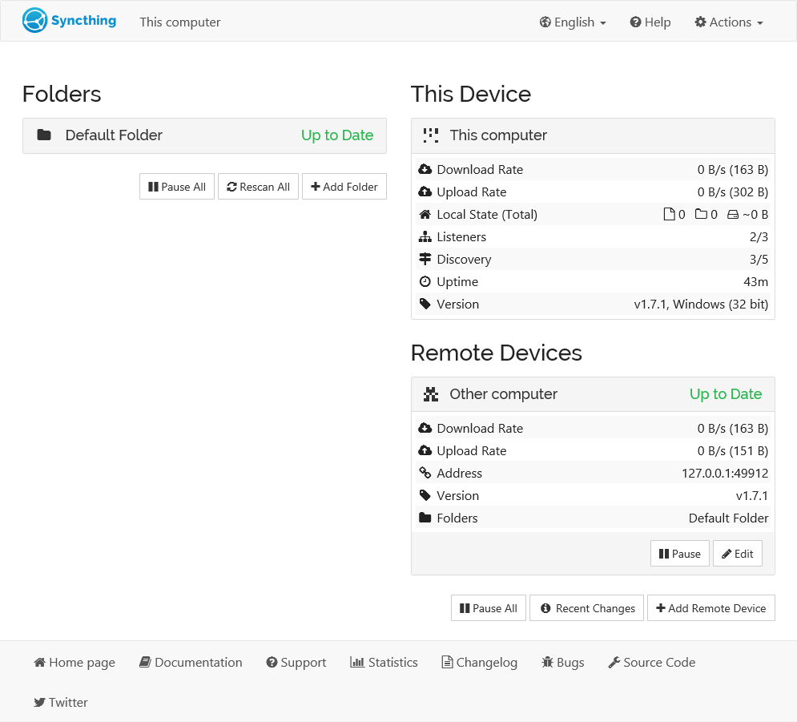

Syncthing 上手：用了一周才搞懂，这东西根本不是网盘替代品
从三设备实测出发，聊直连同步的速度惊喜、Send Only 模式的实用场景、以及那些让新手卡壳的端口映射细节。
之前折腾过不少同步方案：某大厂云盘、老牌同步工具、甚至自己搭的 WebDAV。要么限速限得离谱，要么多端冲突让人头大，要么折腾半天连不上。说实话，我一开始装 Syncthing 也没抱多大期望——又是一个开源工具，能好用到哪去？
结果用了一周，我把家里三台设备（Windows 台式、MacBook、安卓手机）全部串起来了，现在反过来想：去 Syncthing 的官网看了一眼就明白，这玩意儿从设计思路上就跟那些云盘不是一路的。
初印象：轻量，但第一眼有点懵
安装过程比想象中简单。从官方下载拿个 Windows exe 双击完事，macOS 直接下 dmg 拖进 Applications，安卓有 F-Droid 现成包。整个程序本体才几兆，装完不占空间。
但打开的那一刻我愣了一下——它的界面不是传统桌面应用窗口，而是自动弹出一个浏览器标签，地址栏是 127.0.0.1:8384。管理界面全在浏览器里跑，长得像个后台面板。说实话，第一次见这种 Web UI 方案的软件，有点不习惯。不过转念一想，这样跨平台才好做，总不能每个系统各维护一套原生 GUI 吧。

添加设备也简单，每台设备启动后会生成自己的 ID，把对端 ID 粘过来，共享同一个文件夹，就配对好了。文件夹默认是"发送并接收"模式，双向同步。
核心体验：三个让我印象最深的点
直连同步的速度，我没想到能这么快
这是最震撼的部分。之前用云盘同步，本质上是"你→服务器→他"，所有数据都要绕一圈中心节点，速度上限就是云盘给的带宽。Syncthing 不一样——它尝试让设备之间直接连，绕过任何中间人。
我台式机接有线千兆，MacBook 在同屋 Wi-Fi，传一个 4GB 的工程文件夹，看着面板里的进度条呼呼往上走，速度稳定在 80MB/s 以上。同局域网基本就是跑满网络的水平。哪怕两台机器异地（一台在公司，一台在家），只要有公网端口或者中继节点，同步也能跑，不像云盘那样偶尔抽风卡住。
中继是兜底方案，实在直连不上才走中继转发，速度会慢一些但至少能同步。官方文档的思路很明确：先试直连，不行再退一步，绝不强求每条链路都走同一个模式。
Send Only 模式，解决了我手机照片的老问题
我手机相册存了几万张照片，之前试过"手机→电脑"自动同步，结果电脑上整理分类后，手机端反过来被同步弄乱了。后来干脆手动插线拷，麻烦得要死。
Send Only（仅发送）模式就是为这个场景设计的。把手机上的照片文件夹设成仅发送，手机就变成了"源头"——它只管往外发自己的照片，不管其他设备对同目录做了什么。电脑端整理照片、重命名、甚至删几张，手机这边完全不受影响。
还有个 Override Changes 按钮我一开始没敢碰。后来去Syncthing文档翻了一下才明白：如果哪天我想让电脑端的整理结果覆盖回手机，点一下这个按钮就强制以电脑为准推回去。等于是把"谁当老大"的决定权交了出来，而不是默认双向互冲。
文件版本控制，终于不怕同步误操作了
有一次在台式机上整理文档，不小心删了个写了半年的项目文件夹，同步过去 MacBook 那边也没了。幸亏版本控制开着，在 .stversions 目录里找回来了。
默认情况下远端同步过来的改动会覆盖本地文件，开了版本控制之后旧版本先归档再让位。它有四种策略可选：回收站式（按天数清空）、简单式（每文件限 N 版）、交错式（按时间梯度自动精简）、外部式（交给脚本处理）。我现在用的交错式，30 秒内、1 小时内、1 天内、1 周内各留一个版本，老的自动淘汰，不占空间。
但文档里特意强调了一个细节：版本控制只管"从其他设备同步过来的改动"。自己在本机改坏的文件，它帮不了你。这不是 bug，是设计边界——Syncthing 做的是同步，不是备份。想防本机误操作还得靠 Time Machine、VSS 或者自己搭的备份方案。

那些让我卡壳的小折腾
装完跑起来只是第一步，真要稳定用，还得解决几个实际问题。
防火墙和端口映射是第一个坎。Syncthing 默认用三个端口：22000/TCP 和 22000/UDP 做同步，21027/UDP 做本地设备发现。Windows Defender 第一次启动时会弹窗问你要不要放行，别手抖点拒绝。路由器支持 UPnP 的话最省事，它自己会开端口映射，不支持就手动把 22000 转发出去。
第二个坎是开机自启。Windows 好办，设置里勾个"登录时启动"就行。macOS 路线多一点：官方 app 包直接在系统设置的登录项里管理；homebrew 装的跑 brew services start syncthing；从发布包解压的还要手动改 plist 里的用户名，我漏改了一处折腾了半小时才发现。
我习惯把管理界面关了浏览器自动弹那个选项——自启动场景下每次登录蹦个浏览器标签太烦了，需要的时候手动访问 127.0.0.1:8384 就行。
适合谁，不适合谁
适合的人：有多台设备想让它们保持文件一致的（比如台式+笔记本+手机）、在意隐私不想让数据过第三方服务器的、愿意花半小时搞端口映射和自启设置的技术爱好者。我甚至见过有人拿它当小团队的协作同步工具——一台主存机器 Send Only，其他人只读同步，改了东西手动 Override Changes 推回去。
不太适合的：完全不想折腾、开箱即用才是刚需的小白用户；数据量大到 TB 级需要专业备份方案的企业环境；只想要一个"上传下载文件"的云盘替代品——Syncthing 做的是实时同步，不是云存储，它不帮你托管数据。
最后
Syncthing 的文档写得挺扎实，端口、防火墙、版本控制每个细节都讲得明明白白，很多问题翻一下就能解决。三个仓库里也都有对应的内容——GitHub 上 star 数量能大概感知用户规模，国内网络直接打开 Gitee 和 GitCode 不需要科学上网。
用了一周我最大的感受是：这东西的核心竞争力不是"比别人快多少"，而是它根本不做中心服务器——数据永远只在你的设备之间流转，没有任何第三方能看到你的文件内容。这点对于在意隐私的人来说，比速度和功能都重要。
如果你的同步需求是"让自己的几台设备保持一致"而不是"把文件存到云端"，Syncthing 值得花半小时配置一下。